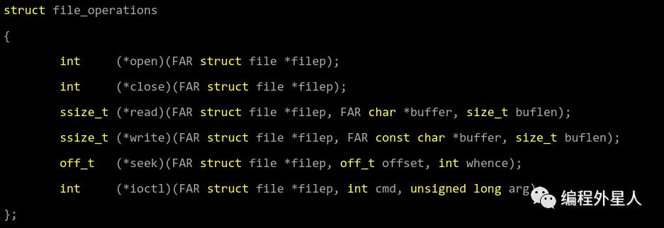
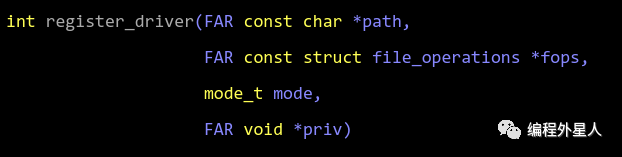
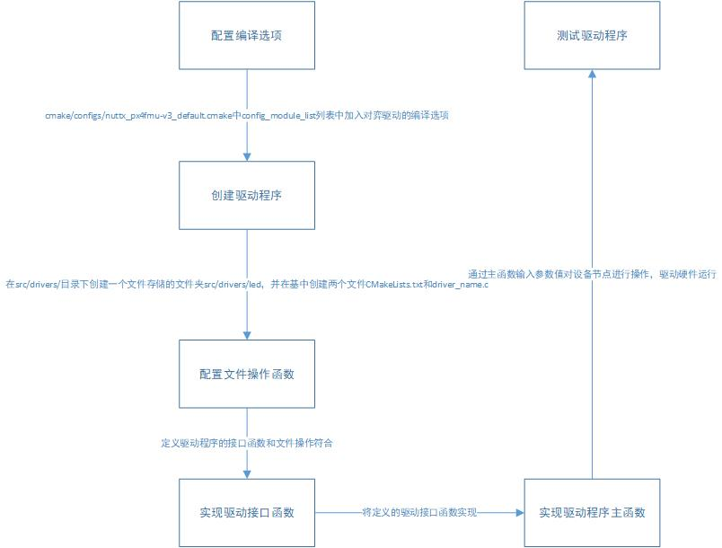

驱动程序定义： 驱动硬件的程序，是操作系统与所有硬件相互通信的桥梁软件，翻译工具。
px4和ardupolit飞控固件都是基于开源嵌入式实时操作系统Nuttx开发的，所有的硬件模块的驱动一般都与飞控固件、系统一起编译后，烧写在硬件平台中。
驱动程序从级别上划分，有两种：
系统级驱动:在操作系统中注册设备节点/dev/xxx，并为应用级驱动程序提供标准的调用方法（open、close、read、write、seek、ioctl等
应用级驱动：通过操作现有的驱动程序设备节点，配置、读取、写入相关数据与设备节点交互，并通过uORB机制与上层应用进行交互，即将设备节点与上层应用建立通讯链路。
系统级驱动程序的原理和开发流程
对于类Unix操作系统，尤其是Linux，或是类Linux操作系统来说，有一个非常重要的理念：一切皆文件。 对于上层应用来说，操作系统所提供的所有内容，无论是何种内容，都是以“文件”形式存在的，它们对于使用者来说都是通用的，都是文件。无论是GPIO、串口、SPI、I2C或是USB接口，或是其它外设，它们对于上层应用都是文件，都存在于/dev/这个设备目录下，在这个设备目录下的所有内容，都被称为设备驱动节点，这些设备节点都是一些驱动程序在操作系统中注册的设备节点，它们对上层应用所暴露的接口都是以文件形式存在的。也就是说，上层应用程序可以像使用文件一样来使用这些驱动设备节点。
操作系统为驱动程序提供了一个叫作struct file_operations的结构，这是操作系统定义的一个通用的文件操作结构体，内容其定义如下：

这个结构体定义了标准、通用的文件操作函数接口（函数指针），驱动程序需要根据实际需要自行实现这些函数。同时驱动程序需要使用register_driver()函数向操作系统注册一个设备节点，我们来看一下register_driver()函数的定义：

struct file_operations *fops：即为上面讲述的文件操作函数指针结构，驱动程序需要实现它们。
mode_t mode：设备节点的操作权限，通常是0666。格式为 类型 / 所属者 / 所属组 / 其它。除类型为-和d之外，其它权限均为0～7,分别表示rxw权限。

void *priv：允许驱动程序根据需要存放自定义的数据内容，可用于硬件数据的读取和存储。
由于PX4是采用C和C++混合编程的开源飞控程序，所以使用C语言编程的用户可以直接使用register_driver()函数来向操作系统注册一个驱动设备节点，而使用C++语言编程的用户可以定义一个驱动程序类并继承CDev类，来注册设备节点。CDev类是PX4程序中提供的一个C++基类，驱动程序需要继承，并重写open、close、read、write、ioctl、seek等方法。这与C语言函数中直接调用register_driver()函数没有任何区别，只不过在使用形式上有所不同罢了，开发使用人员可以根据自己的习惯去选择用哪一种方法来编写驱动程序而不必拘泥于实现方式。
系统级驱动程序的设计实现流程：

应用级驱动程序的原理和开发流程
与系统级驱动不同的是，应用级驱动只需要对已存在的设备节点进行操作，并与上层应用程序做交互。也就是说，应用级驱动的作用是将已存在的设备与上层应用建立起一个链接。通常可以使用任何方式的数据通讯，但在PX4里采用的方式是uORB机制。例如：在/dev下有一个串口设备结节/dev/ttyS2，我们将一个GPS设备接入到这个串口节点上，然后就可以通过标准的驱动程序调用（open、close、read、write、seek、ioctl等）来对这个设备节点/dev/ttyS2来操作了。基本的流程如下：

飞控相关的驱动种类
1、相机驱动：通常可以控制相机的拍照功能，并可以对其指定拍照参数，例如：光圈、快门、感光度、焦距、白平衡、曝光补偿等等。这些控制功能主要取决于相机的功能。对于最初级拍照相机来说，飞控程序只需要对其发送“拍照”命令即可。
2、GPS驱动：全球定位系统（Global Positioning System）的驱动程序。在前面系列中我们已经讲述过，在室外的自动飞行过程中无人机需要执行定点飞行模式，然而定点飞行模式的前提就是要有GPS数据对IMU的积分数据进行修正，所以GPS是自动飞行功能的基础，它通常有ashtech、mtk和u-blox等。驱动程序中会根据当前插入的GPS协议进行自动切换并解析。
3、遥控器驱动：目前常见的遥控器通讯协议为SBUS和PPM，就实用性来说SBUS通讯协议可能更高一点，但其从电路上需要接入一个反向器（Pixhawk上已经加入了反向器），通常采用串口来传输SBUS协议，串口波特率100k，其支持16个遥控器通道，而每一个通道的数值采用11个bit位来表示即11*16=176字节，基格式如下：
[startbyte][data1][data2]……[data22][flags][endbyte]
startbyte=0x0f
endbyte=0x00
4、云台驱动：云台通常安装在多旋翼机架正下方，在云台上挂载相机或其它设备。云台通常有自己的软件程序，可以很好的达到自平衡的状态。也就是说，当飞机产生俯仰或滚转角度时，云台会自动修正其三轴（简易云台通常只有两个转动轴）舵机的角度从而自动恢复平衡。而飞控程序也可以通过向云台发送相关指令控制其当前俯仰、滚转、航向角度。
5、空速计、数传、光流、距离传感器等：这些传感器驱动并不是在所有的飞机上都要使用，通常根据实际需要来使用其中的一个或几个。空速计可以测量当前空气流动速度；数传支持无线传输设备的数据发送与接收；光流定位系统驱动可以检测当前移动速度与位置；距离传感器可以检测传感器前方物体与其之间的距离，例如：超声波、雷达、双目摄像头、激光测距仪等等。
6、IMU传感器驱动：IMU传感器驱动是飞控驱动程序中最重要的部分，其通过初始化、校准、读取加速计、陀螺仪、磁罗盘这些传感器，为上层状态融合和导航系统提供最基本的数据支撑。加速计是检测飞机当前三轴的加速度，陀螺仪可以检测飞机的旋转角速度，而为了消除陀螺仪的航向积分误差，需要使用磁罗盘对其做航向修正。IMU的数据采集的频率通常都高于其它的驱动程序，通常是250Hz。